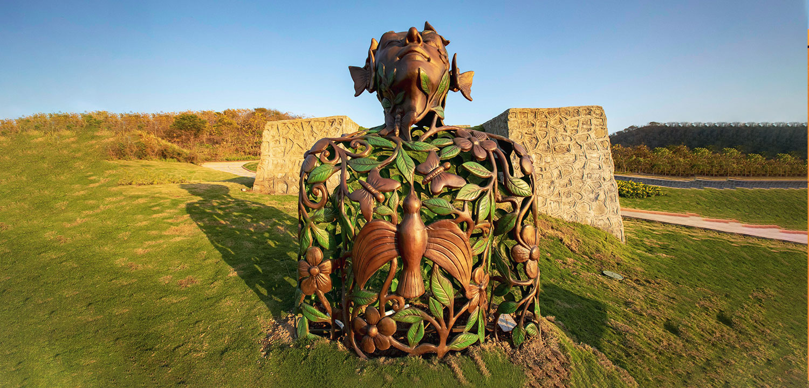

STATUE OF UNITY |
WORLD'S TALLEST STATUE
AT 182 METRES
About Unity
-
History
The statue has been built as an ode to the Iron Man of India, Sardar Vallabhbhai Patel, the first home minister of independent India. He was responsible for uniting all 562 princely states of the country to build the Republic of India. -
About Place
October 31st, 2018, marked the inauguration of the world’s tallest statue – the Statue of Unity, against the backdrop of the dramatic Satpura and Vindhyachal hills in Kevadia, Gujarat. The 182-metre (600 feet aprox.) statue is dedicated to Sardar Vallabhbhai Patel, the architect of independent India. The colossal monument towers over River Narmada, a tribute to India ‘from the people of Gujarat’ to the leader who placed people’s welfare first. The Statue of Unity overlooks the vast surrounds and the river basin of the Narmada River and the sprawling Sardar Sarovar dam. It stands on the Sadhu Bet hillock, connected by a 300-metre bridge, which offers access from the mainland to the statue.
As a part of an outreach programme for the project, the state government had asked Indian farmers to donate their used farming equipment to collect iron needed for the statue of Sardar Patel. Eventually, about 5000 tonnes of iron is believed to be collected. Details of the construction and history of the leader can be seen in an in-house museum, inside the statue.
Attractions Of Statue Of Unity

Valley Of Flowers
The Valley of Flowers (also known as Bharat Van), is spread across 24 acres of land and is a haven for colorful flowering plants along the bank of river Narmada. The Valley of Flower began with 48,000 plants in 2016 and has now reached up to 22,00,000 plants. Besides the parks, several photo booths and selfie points have been developed to take back fond memories of the visit. The spot resembles a rainbow of flowers setup on earth. More than 300 types of flowers are grown in this garden. A right blend of ornamental flowers, trees, shrubs, herbs, climbers and creepers are planted along with various shades of foliage, which forms the green cover in this area

Arogya Van
The Valley of Flowers (also known as Bharat Van), is spread across 24 acres of land and is a haven for colorful flowering plants along the bank of river Narmada. The Valley of Flower began with 48,000 plants in 2016 and has now reached up to 22,00,000 plants. Besides the parks, several photo booths and selfie points have been developed to take back fond memories of the visit. The spot resembles a rainbow of flowers setup on earth. More than 300 types of flowers are grown in this garden. A right blend of ornamental flowers, trees, shrubs, herbs, climbers and creepers are planted along with various shades of foliage, which forms the green cover in this areaButterfly Garden
The Valley of Flowers (also known as Bharat Van), is spread across 24 acres of land and is a haven for colorful flowering plants along the bank of river Narmada. The Valley of Flower began with 48,000 plants in 2016 and has now reached up to 22,00,000 plants. Besides the parks, several photo booths and selfie points have been developed to take back fond memories of the visit. The spot resembles a rainbow of flowers setup on earth. More than 300 types of flowers are grown in this garden. A right blend of ornamental flowers, trees, shrubs, herbs, climbers and creepers are planted along with various shades of foliage, which forms the green cover in this areaHow To Get There
-

By Road
"NH8 passes through Vadodara, making it well connected by road as well. The statue lies about 90km from the city off a small town called Kevadia (3.5 km from the actual site). -

By Train
Vadodara lies on the busy Mumbai-Delhi Western Railway Mainline and is well connected by premium trains like Shatabdi and Rajdhani. -

By Air
Vadodara airport is nearest(90KMs) airport which is well connected